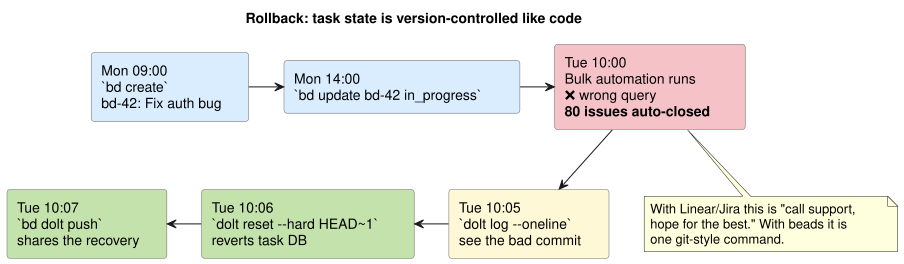
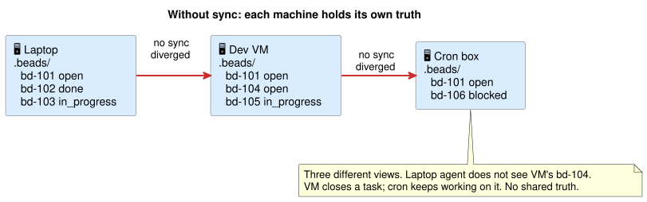
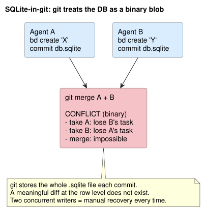
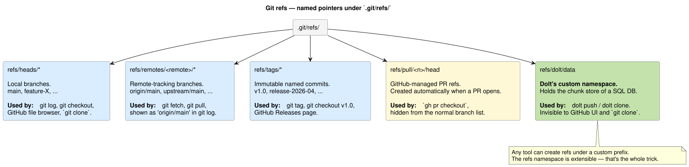
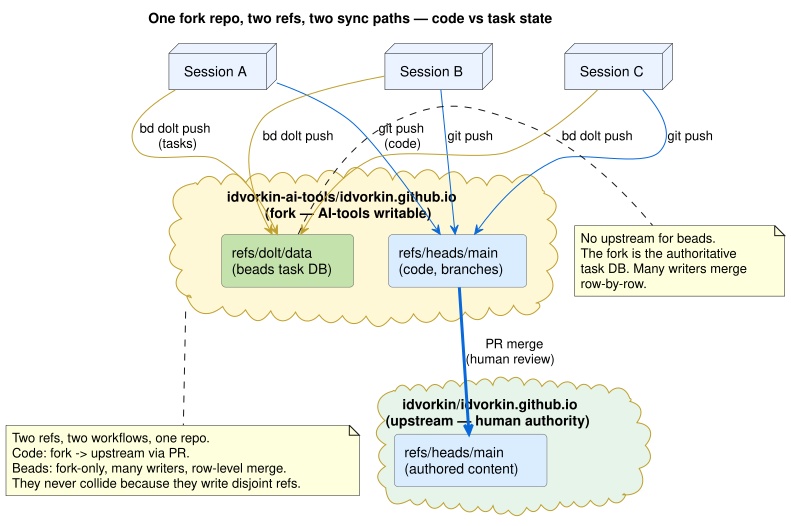
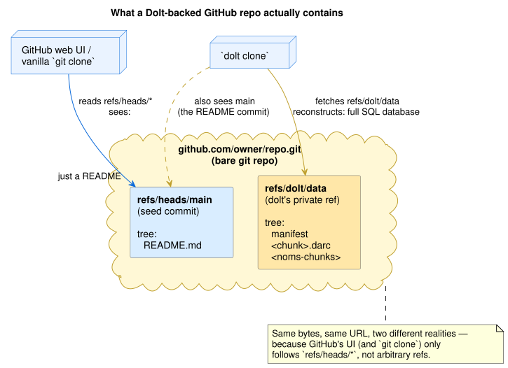
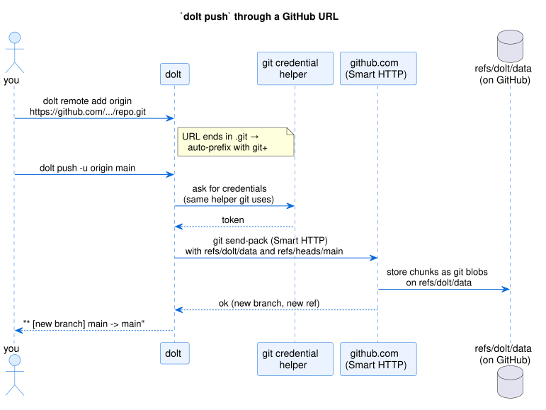
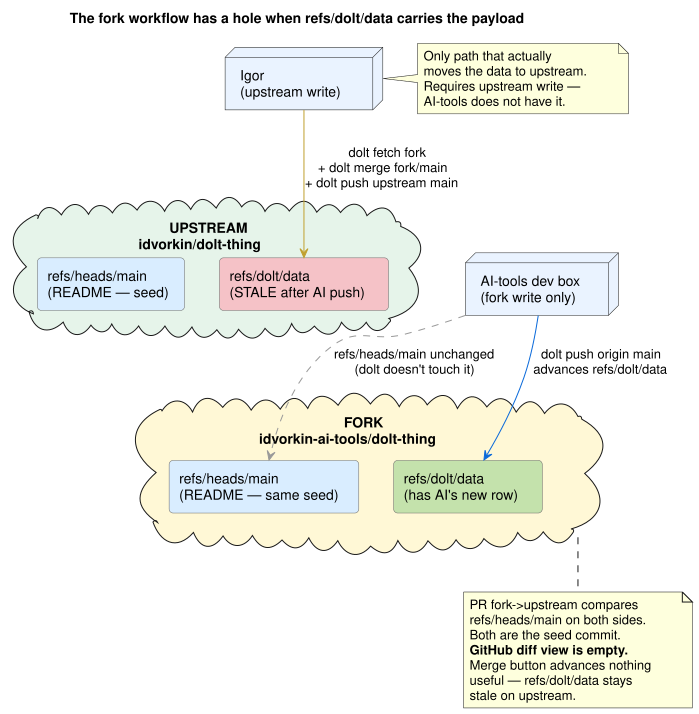
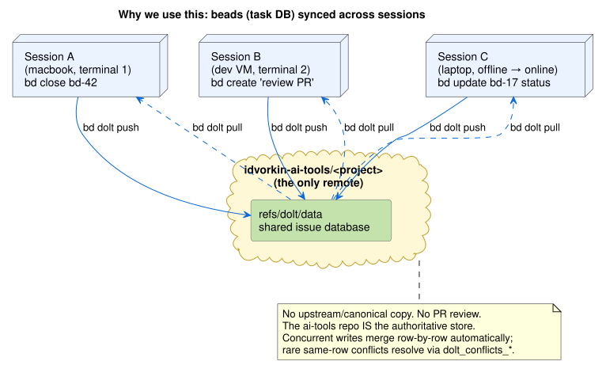

.beads/. Multiple agents on multiple machines all write to that DB. To stay in sync they need a shared store — and for tasks to travel alongside code, that store has to live in the same GitHub repo as the code. Git alone can't do this (SQLite is an unmergeable binary blob). Dolt can: it writes its chunks to a sibling ref refs/dolt/data on the same repo, so code on refs/heads/main and tasks on refs/dolt/data share a fork without colliding. The daily ritual git pull --rebase && bd dolt push && git push is exactly this dual-ref choreography.
Beads (bd) is an AI-native task tracker. No web UI, no hosted service — everything is CLI, and the DB lives inside your repo under .beads/. Agents use it the way a human uses Jira or Linear, except the vocabulary is command-line:
$ bd create "Fix broken anchor in activation.md"
Created bd-287
$ bd list --status open
bd-123 in_progress add conflict scenario to dolt-explainer
bd-287 open fix broken anchor in activation.md
$ bd close bd-287
Closed bd-287Why agents need their own task tracker: they plan, branch off, get interrupted, resume later, hand off to another session. A persistent list of open work — with status, dependencies, references to code — is how they keep their own tail straight. Think of it as agent memory for unfinished business.
Beads' design choice — keep the DB in your repo, version-controlled, no hosted service — has three consequences that matter for an agent-driven workflow:

dolt reset --hard HEAD~1 rewinds the task DB one commit; bd dolt push shares the recovery with every other agent. Same mental model as git reset — because it's the same underlying mechanism.bd-42 back to open and when?" dolt log bd-42 gives you a row-level history: every change, by which session, with commit message. Compare state across time: dolt diff HEAD~50 HEAD -- issues.The cost: no web UI, no email notifications, no human-friendly assignees-and-due-dates. You live in a CLI and trust version history. For agent-driven work that trade is obvious — agents don't send each other Slack DMs about overdue tickets. For a human-PM workflow it'd be wrong.

If only one agent on one machine ever touched the DB, there'd be no problem — SQLite in .beads/db.sqlite would suffice. But real use isn't that shape:
bd list from the laptop.bd-42; session B must not claim it too.git clone a fresh working copy, you want the task state to come along — otherwise the agent starts on a blank slate and re-opens work that was already done.This is a classic multi-writer sync problem: keep a DB coherent across devices and sessions.
You could imagine solving it with a hosted service (DoltHub, a Postgres, a Linear project). Why not?
bd-123 says "the bug is in _d/activation.md:L42." When that line moves or the file is renamed, you want the task history to travel with the code history — same commit graph, same clone, same branch checkout.git clone should be enough to onboard a new machine. One command, one URL, one auth setup. Two separate URLs for code and for tasks is two places to forget, two permission models to keep aligned, two stores to back up.So the requirement tightens: the beads DB must sync through the same GitHub repo as the code, using the same git credential flow, travelling with the same commits.
The obvious thing to try is committing the DB file into the repo — git add .beads/db.sqlite. It doesn't work:

open to in_progress.bd-42? When? You can't answer from git log + git blame.What you want is something with git's workflow semantics — clone, branch, commit, push, pull, merge, reset, log — but which understands rows, not bytes. Three of those (reset, log, row-level merge) are what enable the rollback/audit story above. That's exactly what Dolt is.
Before we get to the Dolt trick, worth 30 seconds on refs — because the whole mechanism hangs off one. A ref is just a named pointer to a commit SHA, stored under .git/refs/. You already use them every day, you just don't say "ref" out loud:

/* (remote-tracking branches), refs/tags/* (tags and releases), refs/pull/refs/heads/main is your local main branch. git checkout main points HEAD at this ref. GitHub's file browser shows whatever tree this ref points to.refs/remotes/origin/main is what you've last fetched from origin's main. git log origin/main walks this.refs/tags/v1.0 is an immutable tag. git tag v1.0 creates it. GitHub's Releases page lists tags.refs/pull/<n>/head is a GitHub-managed ref that appears when someone opens PR #n. gh pr checkout <n> reads it. Most tools ignore it.Critical property: the refs namespace is extensible. Any tool can write refs under its own prefix. GitHub does it with refs/pull/*. Gerrit does it with refs/changes/*. And Dolt does it with refs/dolt/data.
Which means the "sibling ref" we keep mentioning is not a hack or an extension point that had to be added — it's just using the namespace git already has. Dolt writes to refs/dolt/data the same way GitHub writes to refs/pull/123/head. Git stores the blobs. Different tools read them.
Also useful to know:
git clone only fetches refs/heads/* and refs/tags/* by default. Everything else (pull refs, dolt data) needs an explicit refspec or a tool like gh / dolt that knows what to ask for.git ls-remote <url> lists every ref on a remote, which is how you can tell from the outside whether a repo has dolt data, pull refs, etc. We use this all over the scenarios below.Dolt is "git for tables." It keeps its database in a content-addressed chunk store, presents a dolt log / dolt diff / dolt merge interface, and — this is the part that solves our problem — when you point it at a URL ending in .git it speaks plain git Smart HTTP and writes its chunks to a separate ref, refs/dolt/data, on the same GitHub repo as your code.

Two refs, two workflows, one repo. They never collide because they write disjoint refs:
| Data class | Ref | Who writes | How it merges |
|---|---|---|---|
| Blog code & prose | refs/heads/main, refs/heads/<branch> | You, via git push | Human review + git merge / rebase |
| Beads task DB | refs/dolt/data | Every agent on every machine, via bd dolt push | Dolt row-level three-way merge |
bd dolt push is a thin wrapper around dolt push origin main, and dolt push is a thin wrapper around git send-pack over HTTPS. Same repo URL, same auth, different ref. Everything beads needs to sync rides on git infrastructure.
The blog's CLAUDE.md session-completion ritual:
git pull --rebase # pull others' code onto my local main
bd dolt push # share my beads writes to the fork's refs/dolt/data
git push # share my code to the fork's refs/heads/mainWhy this order?
git pull --rebase first so a concurrent git push from another session doesn't reject yours as non-fast-forward. Classic git hygiene, applies as normal.bd dolt push before git push because the beads push is independent of the code push — if the code push fails, the beads push has already shared your task state, which is the more time-sensitive of the two. Skipping this is how stranded beads happen: you close 10 issues, crash your session, and nobody else sees any of them.git push last because that's what everyone else is watching for code updates.
Dolt ships with its own remote protocol, but when you point it at a URL ending in .git it switches into git mode: it speaks the Git Smart HTTP protocol, uses your ordinary git credential helper, and pushes all its database state to a sibling ref called refs/dolt/data. bd dolt push is a thin wrapper around that.
$ bd dolt remote list
origin git+https://github.com/idvorkin-ai-tools/idvorkin.github.io.git
# ^^^^ dolt auto-added this prefix — URL ends in .git -> git modeWhat the repo holds after a bd dolt push, asked via git ls-remote:
$ git ls-remote https://github.com/idvorkin-ai-tools/idvorkin.github.io.git
abc1234… HEAD
def5678… refs/dolt/data <- beads task DB
abc1234… refs/heads/main <- code, PRs, branches
abc1234… refs/heads/feature-X <- more code branches
# ...
refs/heads/*. If code on main hasn't changed, GitHub looks identical before and after a beads push — even though your task DB is completely different. A vanilla git clone fetches only refs/heads/* and misses beads entirely. You need bd dolt clone (or dolt clone directly) to rehydrate the task DB.

If you tried to run beads through the code workflow — "open a PR with my task changes, have Igor review and merge" — three things would break:
bd dolt push doesn't update refs/heads/main. It only writes refs/dolt/data. A PR opened after a beads push would show identical refs/heads/main on both sides.refs/heads/<base>..refs/heads/<head>. Both sides are the same commit → "nothing to compare." Igor has no visual diff of the task changes.refs/heads/main. It cannot move refs/dolt/data. Clicking Merge would change nothing about upstream's beads DB.None of this is a bug — it's the intended behaviour. Beads is not supposed to flow to upstream. The fork is the authoritative task store; upstream should never see it.

Many concurrent writers would be unworkable with SQLite-in-git (unmergeable binary blob) or with a GitHub PR per task change (serialized, reviewed). Dolt's row-level three-way merge makes it routine:
bd-42 while another updates bd-99, merge automatically on the next bd dolt pull → bd dolt push.bd-123 at the same time produce a cell-level conflict stored as actual rows in dolt_conflicts_issues with base_*/our_*/their_* columns. You resolve via SQL or dolt conflicts resolve --theirs, commit the merge, push.Scenarios 4 and 5 show both paths end-to-end.
Seven reproducible shell scripts. Each wipes its own run directory, sets up fresh state, leaves artifacts for you to poke at. ./scripts/run-all.sh runs them end-to-end in ~20 seconds, offline. Scenarios use a generic items table but the mechanics are identical to what beads does with its issues table.
Init a database, create a schema, insert rows, stage and commit. Same two-phase model as git. This is what bd init produces minus the beads schema.
Loading…Add a remote, push, clone into a second working copy. This is what the first bd dolt push on a new repo does: materializes the chunk store on the fork so other sessions can fetch it.
Loading…Session B adds an issue, pushes. Session A pulls and sees it. History preserves B's author/message on A's side — exactly what you want for "who closed bd-42 and when."
Loading…Two agents create or update different issues simultaneously. First push wins; second hits non-fast-forward; bd dolt pull runs a three-way merge with no human input. History ends with a merge commit; both changes land.
Loading…Merge stops with a cell-level conflict stored as a row in dolt_conflicts_<table> (base_*/our_*/their_* columns). Resolve with dolt conflicts resolve --theirs or write SQL, commit the merge, push. Rare in practice — most agent work touches different issues.
Loading…Push a DB to a bare git repo (stand-in for GitHub). git log refs/heads/main shows only the code. git ls-remote reveals the hidden refs/dolt/data. bd dolt clone (or raw dolt clone) fetches both refs. A vanilla git clone gets only the code side.
Loading…Two bare git repos stand in for idvorkin/upstream and idvorkin-ai-tools/fork. Agent pushes beads to fork. We compute what a fork-to-upstream PR would actually see (answer: nothing), and what clicking Merge would do (answer: nothing useful). Ends with the only path that works: admin pulls locally with dolt merge and pushes upstream — which we intentionally don't wire up for beads.
Loading…git clone https://github.com/idvorkin-ai-tools/dolt-explainer.git
cd dolt-explainer
brew install dolt # or the user-local installer
./scripts/run-all.sh # ~20 s, offline, writes to runs/
./scripts/run-all.sh --live # also run 06b against real GitHub (needs gh auth)